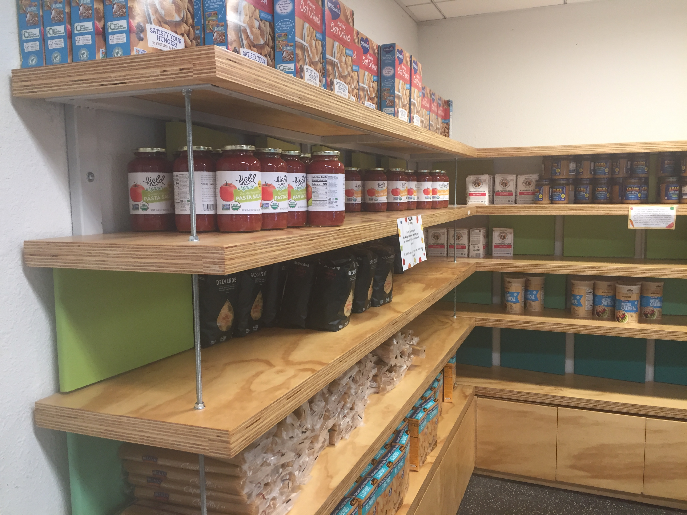

I’ll admit, I initially had some trouble even trying to locate this place under the ASUC. When I found it, I was met with a small room that looked sort of like a grocery store, which was connected to a warehouse which is presumably for storing all the food that wasn’t on the shelves.

To be perfectly honest, before I began this class I didn’t know what a public food pantry even was or that it existed. This is why I didn’t think too much about what the customers might be going through when I first arrived at the pantry.

Unlike with the grocery store, here I’m quite literally treading on familiar territory, since I live in a coop with its own garden. From time to time we would use some of the fruits and vegetables grown in our garden, namely the huge tomatoes we manage to harvest.